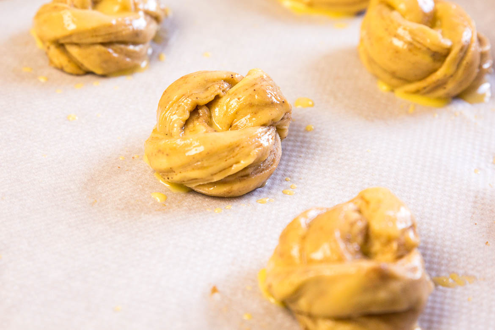
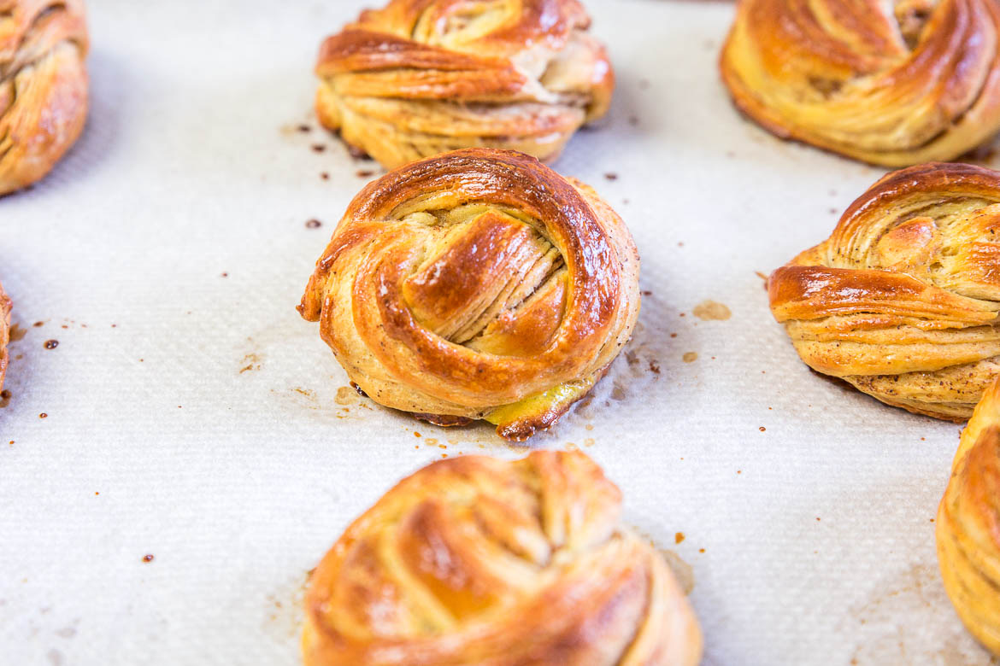

Kanelbullar, brioche Suédoise à la cannelle
Hello les gourmands, on commence la semaine avec une bonne odeur de brioches à la cannelle avec la recette des Kanelbullars.
Les kanelbullars, pour ceux qui ne connaissent pas, sont une spécialité suédoise, une viennoiserie popularisée dans les années 1920 sous le nom de « roulé à la cannelle ». (Pour le goût c’est la même chose que des cinnamon rolls mais cette méthode de « roulage » donne, je trouve, un côté encore plus moelleux à la brioche).En parlant de « roulage » je vous enverrai sur un lien youtube qui permet de comprendre parfaitement comment plier les kanelbullars pour obtenir cette forme (ça m’a été d’une grande aide pour les premiers)!
Concernant la recette, certaines contiennent de la cardamome dans les ingrédients et je me laisserai tenter par cette version lors de ma prochaine fournée et pourquoi pas ajouter aussi un mélange d’épices pour pain d’épices directement dans la pâte à brioche.
C’est typiquement le genre de recette pour laquelle j’aimerais créer un blog olfactif (ça n’existe pas encore) qui vous enverrait un échantillon de l’odeur de la cuisine pendant la préparation des recettes !!
Une playlist de Noël et cette odeur de cannelle, il n’y a rien de mieux pour passer un bon week-end 😊.Vous pouvez faire une grosse fournée de ces brioches, les congeler et les réchauffer une dizaine de minutes pour vos petits déjeuners (moi je n’ai jamais réussi, elles sont toujours très vite englouties^^).
Pour ceux qui ne le savent pas encore, je suis ambassadrice Albal pour cette nouvelle année 😊 Je ne pense pas avoir besoin de présenter la marque que tout le monde doit déjà connaitre ! J’utilisais leur papier cuisson bien avant et je suis presque certaine que ma grand-mère devait utiliser le même !! La marque existe depuis 1965 et ne cesse de se renouveler depuis. Je pense d’ailleurs partager avec vous 3 recettes en collaboration avec leurs produits et qui sait, je vous ferai peut-être découvrir certaines de leur nouveautés (et gagner de leurs produits) ! Ici j’ai utilisé leur papier cuisson anti-adhérent, ce qui m’a évité d’avoir des morceaux de papier cuisson collé au dos de mes kanelbullars car c’est souvent ce qui arrive avec la cuisson des brioches qui ne sont pas cuites dans un moule 😉.
Je vous laisse avec la recette et je vous dis à très vite ! ♥
Ingrédients
- Farine - 300g
- Sucre - 35g
- Levure fraîche - 9g
- Sel - 3.5g
- OEufs - 75g
- Beurre doux mou - 100g
- Lait - 110g
- Beurre doux mou - 100g
- Sucre - 75g
- Cannelle - 2 càs
- Oeuf + un peu de lait - 1
- Sucre glace - 75g
- Eau - 75g
- Jus de citron - 1-2 càc
Instructions
- Dans un petit bol, délayez la levure fraiche dans le lait tiède et une pincée de sucre
- Dans le bol du robot, versez la farine, le sucre et le sel .
- Ajoutez la levure délayée avec le lait puis ajoutez ensuite les œufs
- Pétrir pendant 10 /15 minutes.
- La pâte doit se détacher des parois, être lisse et élastique
- Attention la pâte ne doit pas être collante, si besoin ajoutez un petit peu de farine mais normalement ce ne devrait pas être nécessaire
- Coupez le beurre en morceaux
- Ajoutez le morceaux par morceaux à la pâte tout en pétrissant
- Pétrir à nouveau 10 minutes
- Placez la pâte dans un grand saladier, filmer et laisser monter dans un endroit chaud (je préchauffe mon four à 40°C, j'éteins le four et je laisse ma pâte à l’intérieur le temps de la pousse)
- Autre alternative : laissez la pâte lever toute une nuit au frigo
- Réalisez le beurre à la cannelle en mélangeant tous les ingrédients jusqu’à avoir une préparation molle et tartinable.
- Farinez le plan de travaille et y pétrir la pâte,
- Étalez la pâte sous la forme d'un grand rectangle
- Tartinez de beurre à la cannelle puis replier la pâte en trois (voir photos)
- Il faut plier la partie supérieur et la partie inférieur sur le milieu puis replier la pâte sur elle-même
- Aplatir à nouveau le rectangle obtenue afin d’avoir un rectangle de 2-3 mm d'épaisseur.
- Recouvrir 2 plaques de cuisson de papier cuisson
- Détaillez des bandes de pâtes dans le rectangle de pâte.
- Façonnez-les en nœud soit en nœud (pliage en vidéo ici)
- Déposez-les au fur et à mesure sur les plaques de cuisson.
- Couvrez-les d'un torchons et laissez-les reposer 30minutes-1h
- Préchauffez le four à 180°C.
- Dorez les brioches d’œuf battu mélangé à un peu de lait
- Cuire environ 15 minutes. Les brioches doivent être dorées et moelleuses
- Laissez refroidir (je les adore encore chaudes!!)
- Vous pouvez réaliser un sirop de sucre glace + eau et nappez les brioches refroidies de ce sirop
- Servir avec un bon chocolat chaud!


Les tips de la communauté
Brioches suédoises très appréciées pour leur goût et présentation. Une erreur dans la recette (quantité de lait manquante) a été rectifiée. Les lecteurs soulignent l'arôme merveilleux et proposent des variantes intéressantes.
Astuces
- L'arôme qui se dégage est incroyable et remplit toute la maison
- Les laisser décongeler à température ambiante
- Essayer la version finlandaise avec cardamome pour plus de saveur
Variantes suggérées
- Version finlandaise (Korvapuusti) avec cardamome en poudre mélangée à la pâte
- Façonnage en nœud pour une présentation élégante
Ajustements signalés
- La quantité de lait pour la pâte à brioche était manquante et a été rectifiée